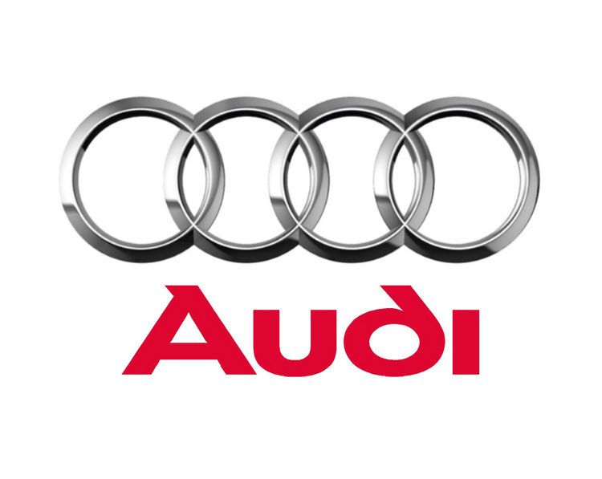

-
Kia – 23,47% dintre toate modelele analizate au avut defecțiuni:
- Probleme obișnuite la servodirecția electrică;
- Frâna de staționare poate ceda;
- Filtrul de particule (la Diesel) se înfundă în cazul mersului necorespunzător.
-
Hyundai – 26,36% dintre toate modelele analizate au avut defecțiuni:
- Coroziune în partea din spate a șasiului;
- Probleme cu frâna de staționare, imobilizarea roților fiind disproporționată;
- Parbrize de slabă calitate.
-
Volkswagen – 27,77% dintre toate modelele analizate au avut defecțiuni:
- Volantul cu masă dublă poate ceda prematur;
- Cutia de viteze manuală se poate defecta;
- Modulul ABS/ESP prezintă erori.
-
Nissan – 27,79% dintre toate modelele analizate au avut defecțiuni:
- Diferențialul poate prezenta diverse probleme;
- Apariția ruginii structurale în centrul lonjeroanelor;
- Termoflotul cutiei de viteze automate poate ceda.
-
Mazda – 29,89% dintre toate modelele analizate au avut defecțiuni:
- Turbinele tind să dezvolte probleme pe motoarele Skyactiv Diesel;
-
Simeringurile injectoarelor pot să nu mai etanșeze corespunzător
în cazul
mașinilor Diesel ; - Pompa de ABS cedează în mod frecvent.
-
Audi – 30,08% dintre toate modelele analizate au avut defecțiuni:
- Uzură pronunțată a ambreiajului;
- Probleme pe partea de servodirecție;
- Diverse defecte ale cutiei manuale de viteze.
-
Ford – 32,18% dintre toate modele analizate au avut defecțiuni:
- Volantul cu masă dublă și ambreiajul necesită reparații sau înlocuire;
- Probleme ale pompei de servodirecție;
- Cutia de viteze automată CVT poate ceda.
-
Mercedes-Benz – 32,36% dintre toate modelele analizate au avut defecțiuni:

- Pătrunderea umezelii în interiorul blocurilor optice/faruri;
- Garniturile injectoarelor de motorină pot să nu mai etanșeze corespunzător;
- Probleme comune cu sistemul de frânare Sensotronic (SBC).
-
Toyota – 33,79% dintre toate modelele analizate au avut defecțiuni:
- Senzorul de înălțime al suspensiei pe spate poate avea erori/poate ceda;
- Defectarea instalației de aer condiționat;
- Predispoziție la coroziune severă.
-
BMW – 33,87% dintre toate modelele analizate au avut defecțiuni:

- Senzorii modulului ABS se pot defecta;
- Diverse probleme pe partea electrică;
- Neregularități în reglajul unghiurilor la roţi.